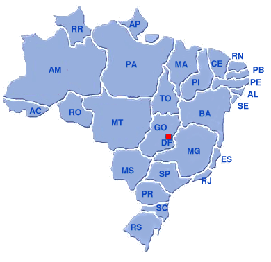

O Distrito Federal foi criado para abrigar a nova capital do Brasil, Brasília, inaugurada em 21 de abril de 1960. A ideia de transferir a capital para o interior surgiu ainda no século XIX, mas foi concretizada durante o governo de Juscelino Kubitschek. O projeto urbanístico foi elaborado por Lúcio Costa e a arquitetura por Oscar Niemeyer.
Segundo o IBGE, a população estimada do Distrito Federal em 2024 é de 2.982.818 habitantes.
A cultura do DF é marcada pela diversidade trazida por migrantes de todo o país. Brasília é Patrimônio Cultural da Humanidade e abriga monumentos icônicos, como a Catedral Metropolitana, o Congresso Nacional e o Museu Nacional. A cidade também é conhecida por sua cena musical, com destaque para o rock e o hip hop.
O Distrito Federal está localizado na região Centro-Oeste do Brasil, cercado pelo estado de Goiás. Veja abaixo o mapa da região:
O Distrito Federal possui 33 regiões administrativas, que funcionam como bairros. As mais populosas são Ceilândia, Samambaia e Plano Piloto.
Esses rios fazem parte de sete bacias hidrográficas que cortam o DF.